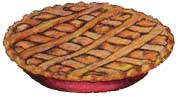

Like a crotchety relative whose seating at a family reunion must be carefully plotted to prevent outbreaks of hostility, sweet fennel ( Foeniculum vulgare ) both gives and takes offense easily. It makes life miserable for neighboring tomatoes, bush beans, caraway, and kohlrabi . . . while proximity to wormwood or coriander makes it go into the sulks, refusing to germinate or grow properly. Contrariwise, fennel tends to get overfamiliar with dill, to the point of cross-pollinating, which ruins the flavors of both plants. Then why - you might well ask - do gardeners invite such a touchy herb into their gardens? Because, like many difficult individuals, fennel also has good qualities that make it worth cultivating. For one thing, its seeds, leaves, and stems are all edible. Moreover, it demands little attention from its host or hostess after having been made to feel at home; once sprouted in only moderately fer tile, chalky soil, it requires little watering or feeding. Then again, because fennel produces a multitude of seeds, it can also overextend its welcome, naturalizing in a year or two.
A tall plant that can grow five feet high, fennel has hollow, bluegreen stems . . . flat umbels of greenish yellow florets that bees buzz around as it blossoms all summer long . . . and vivid green, feathery leaves that can create a delicate filigreed backdrop for shorter flowers at the front of your garden.
To grow fennel, sow the seeds in a sunny spot (one that's well away from susceptible herbs) after the soil has begun to warm. Keep the ground moist until two seed leaves appear (about two weeks). Thin the seedlings to a foot or so apart. Harvest the seeds when they turn light brown. In the fall, dig up the taproots and put them in sand in a cold frame or in a cool cellar. The next spring, trim the roots a bit and replant them about a yard apart.
The seeds of this versatile plant can perk up borscht, pickles, and chutney; add a sly "mystery" flavor to apple pie; and produce a pleasant anisescented tea. The firm, bulbous stem base - crisp as celery and with a faint note of licorice - may be sliced raw into salads or dipped first into olive oil and then into salt to make a crunchy hors d'oeuvre. Both bulbs and stems are savory when steamed and served with a drizzle of butter. Because the herb cuts the oily taste of fish (and is thought to aid in its digestion), you may wish to toss some dried fennel stalks onto the charcoal at a seafood barbecue. Then, before serving the seafood, top it with a dollop of butter mixed with chopped fennel sprigs and a little vegetable salt. If you bake bread, you might try lining the pan with this herb's lacy leaves, as the Italians do.
Repeated applications of cool fennel tea were once believed to restore fading eyesight, and the herb's seeds have long been considered effective as appetite suppressants. In ancient Greece, athletes ate them to avoid gaining weight, and small-fry Colonial Americans were handed "meetin' seeds" during Sunday sermons to stave off stomach rumbles. To discover whether the grains curb your appetite, gather them after they've turned from green to light brown . . . but do it before they scatter in September, or this invited garden guest may brashly take over the whole plot.
|
Seeds add a hint of anise flavor to apple pie. |
 Fennel hung over one's door on Midsummer's Eve ""kept witches away."" |
Bouquet's of the herb were believed to protect the house from fire. |
|
Greek athletes ate fennel seeds to avoid getting fat. |
|
|